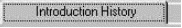
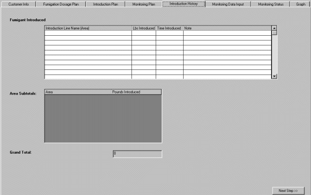
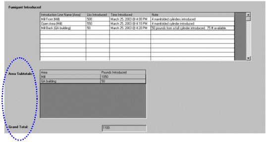
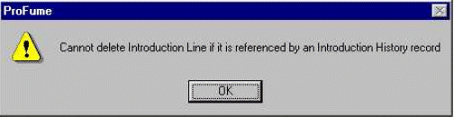
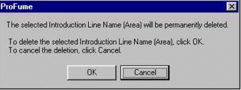

Introduction History Tab
Once you developed your Monitoring Plan, the next tab in the program is Introduction History.

The Introduction History tab is a handy location for recording quantities of fumigant released in the various areas of a structure. Note: No fields on this tab are required. Below is an example of the Introduction History Tab before details are entered.

In the next example, the fumigator recorded the date, time and quantities of ProFume introduced per area. Notes per area were also recorded. Notice the Area Subtotals and building's Grand Total circled with the dotted line. These totals are calculated below the Fumigant Introduced entry screen.

Warning Message Linked to the Introduction History Tab
The following warning message box will appear if a fumigator attempts to delete an introduction line established in the Introduction Plan tab for which data are available.

Before an introduction line can be deleted, the fumigator will be warned with the message box below:
